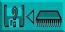
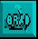

This is used to insert a completely new bank of Object images at the position of
the selected Object in the current bank. Experiment with this option, and merge a
new bank of images with your existing Object images.
This is used to insert a completely new bank of Object images at the position of
the selected Object in the current bank. Experiment with this option, and merge a
new bank of images with your existing Object images.A file listing will appear Automatically, with the request:
Choose an Object bank
You will normally make your choice by clicking on the Objects folder, selecting the file of Objects that takes your fancy, and then confirming your choice by clicking on the [OK] option. The Object images will load automatically, and you will be returned to the main Edit Screen. If you have already loaded "Bobs.Abk", simply click on [Quit] to return to the Object Editor. Please try to resist the temptation of exploring icons at random, and take a little time to follow this guided tour step by step. You will learn much faster in this way, and it will be more entertaining.
Merge New Bank
This is used to insert a completely new bank of Object images at the position of
the selected Object in the current bank. Experiment with this option, and merge a
new bank of images with your existing Object images.
Use exactly the same method that was employed to load your original choice, but select a different file of Object images. When you return to the Edit Screen, click on the slider bar to the right of the vertical block of Objects on screen, and run it up and down to display the current Object images in memory. You can see where the new bank has been merged with the original bank, and the colour palette will have changed to the palette used by the newly merged bank of Object images.
Save Bank
 To save edited Objects, have a suitable disc ready in the disc drive, and click on this icon.
A file selector will be displayed if your Object bank has no name, and all instructions are
prompted on screen.
To save edited Objects, have a suitable disc ready in the disc drive, and click on this icon.
A file selector will be displayed if your Object bank has no name, and all instructions are
prompted on screen.
Please do not use any of your AMOS Professional discs for this purpose, but format a work disc, using the [FORMAT] option in the Disc Manager.
Save As

Similarly, only use a formatted work disc for this purpose. Unlike the [Save Bank]
option, when this [Save As] icon is chosen, a file selector will always be displayed
before the current Object bank is saved.
After naming the bank, instructions are given on screen. As with all of these options, AMOS Professional allows you to change your mind or [Quit] at any time during the current process.
Grab Palette

When this icon is selected, nothing is seen immediately, but the colour palette is
automatically updated to the colours of the new Object bank, whenever that bank is
loaded or merged.
If you do not select this option, the original palette will remain for the loading or merging process. To de-select this option, simply click on the icon once more.